🌸 Ein Hauch von Japan und Mittelalter: Das 23. Kirschblütenfest in Reileifzen
Tradition, Kultur und Gemeinschaft trotz wechselhaftem Aprilwetter
Das Kirschblütenfest der Heimat- und Verkehrsvereine lockte auch in diesem Jahr wieder zahlreiche Besucher nach Reileifzen. Thorben Grühn, 1. Vorsitzender des Heimat- und Verkehrsvereins Reileifzen 1969 e.V., eröffnete die Veranstaltung offiziell und begrüßte die Gäste in der traumhaften Landschaft des Weserberglandes. Trotz kühler Temperaturen und Regen am Vormittag ließen sich die Besucher die besondere Atmosphäre nicht entgehen, bei der japanische Tradition auf das europäische Mittelalter traf.
Pünktlich um zwölf Uhr mittags startete das Programm mit einem kulturellen Höhepunkt: Die japanische Delegation, angeführt von Generalkonsul Shinsuke Toda, stellte die japanische Kirschblütenprinzessin Yoshine-san vor. Begleitet wurde die Zeremonie von unserem langjährigen japanischen Freund Taka. Als Zeichen der tiefen Verbundenheit wurde anschließend gemeinsam ein Kirschbaum gepflanzt. Am Nachmittag durfte der Ort zudem die neu gekrönte deutsche Kirschblütenkönigin Sophie mit ihrem Gefolge begrüßen.
Unter den Ehrengästen befand sich hochrangiger Besuch aus Politik und Gesellschaft. Neben Herrn Toda waren Wirtschaftsminister Grant Hendrik Tonne, die Vizepräsidentin des Niedersächsischen Landtags Sabine Tippelt, Landrat Schünemann, Bürgermeister Dörrier sowie Samtgemeindebürgermeister Junker anwesend. Ebenfalls unter den Gästen hießen wir den Vizepräsidenten der DLG Bielefeld herzlich willkommen.
Auf der Festwiese gab es viel zu entdecken:
-
Mittelalterlager: Die Gruppe „Weser-Bogen Reileifzen“ entführte die Gäste in
das 11. bis 13. Jahrhundert mit Vorführungen alter Handwerke wie Schmieden,
Seilerei und Bogenschießen.
Ausstellungen: Historische Traktor-Oldtimer zogen die Blicke auf sich.
Für Kinder: Neben Kinderschminken waren die ausgestellten Rinderrassen ein besonderer Blickfang für Besucher.
Kulinarik & Musik: Für die Verpflegung sorgten herzhafte Speisen sowie selbstgebackene Kirschkuchen und Torten, während das Stahler Blasorchester und Sebastian Hegener den musikalischen Rahmen bildeten.
Ein herzliches Dankeschön gilt allen Sponsoren, ehrenamtlichen Helfern und Unterstützern, die diese Veranstaltung möglich gemacht haben.
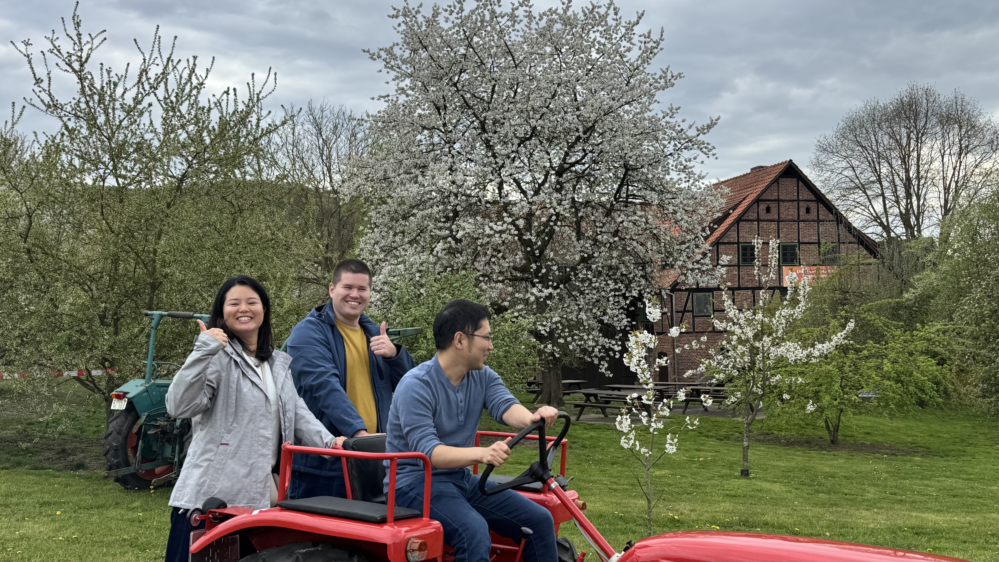
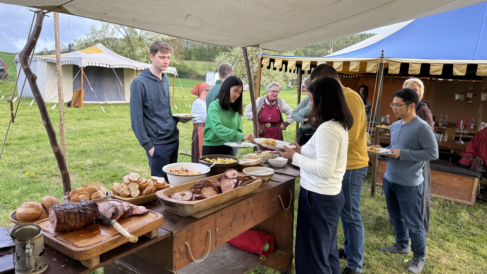
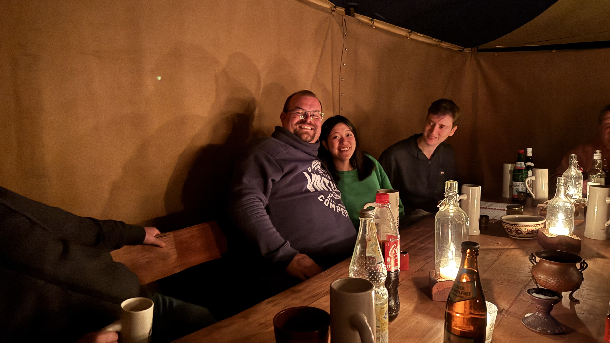
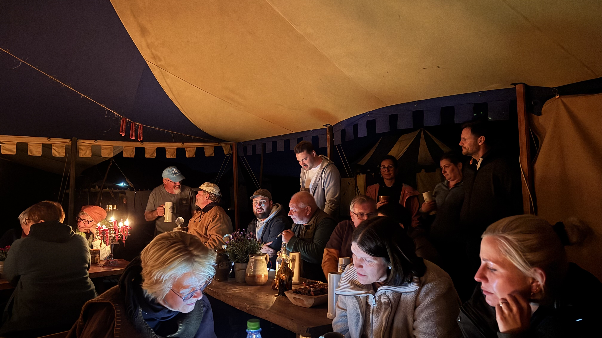
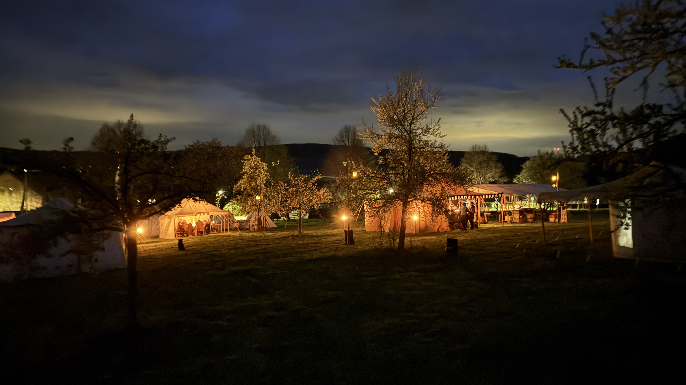
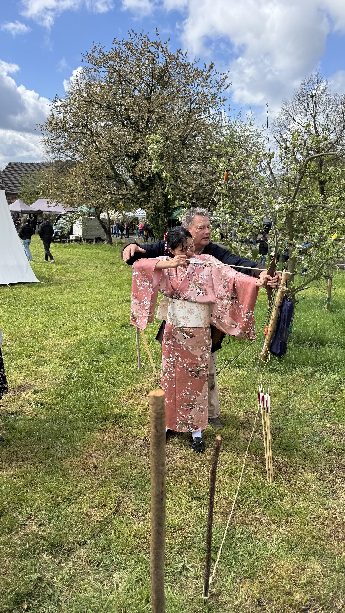
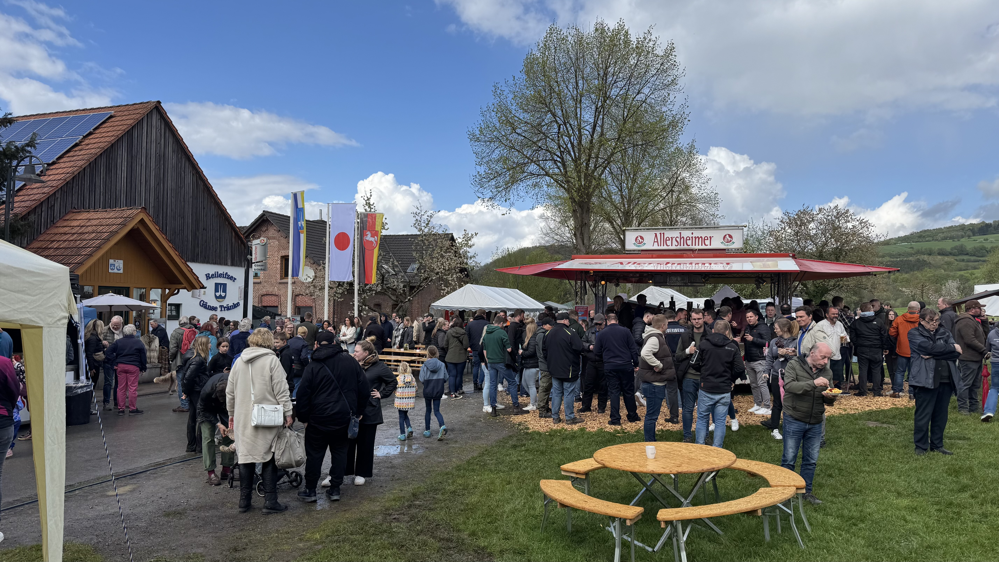
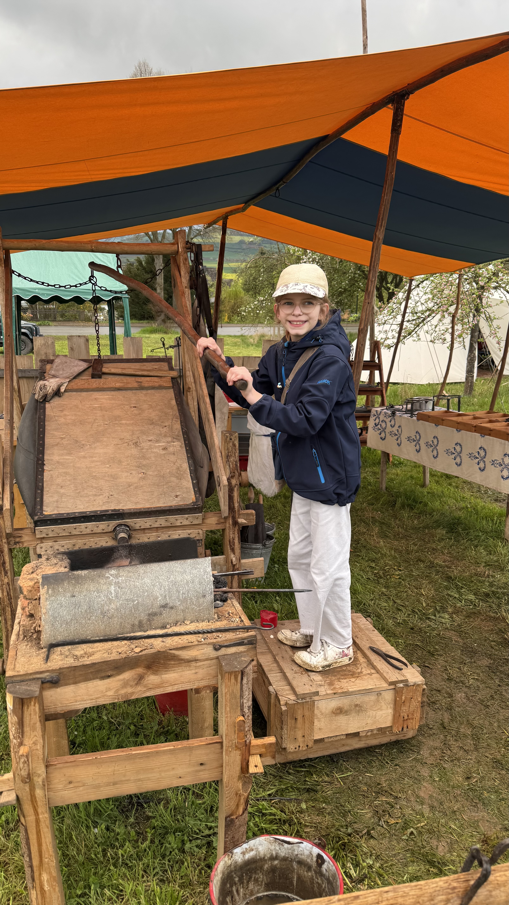
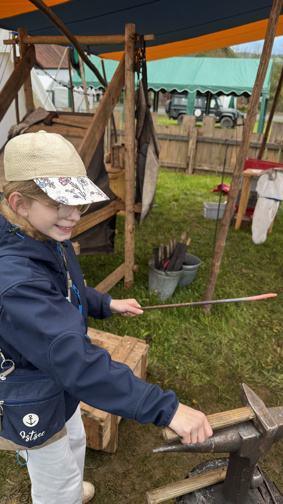
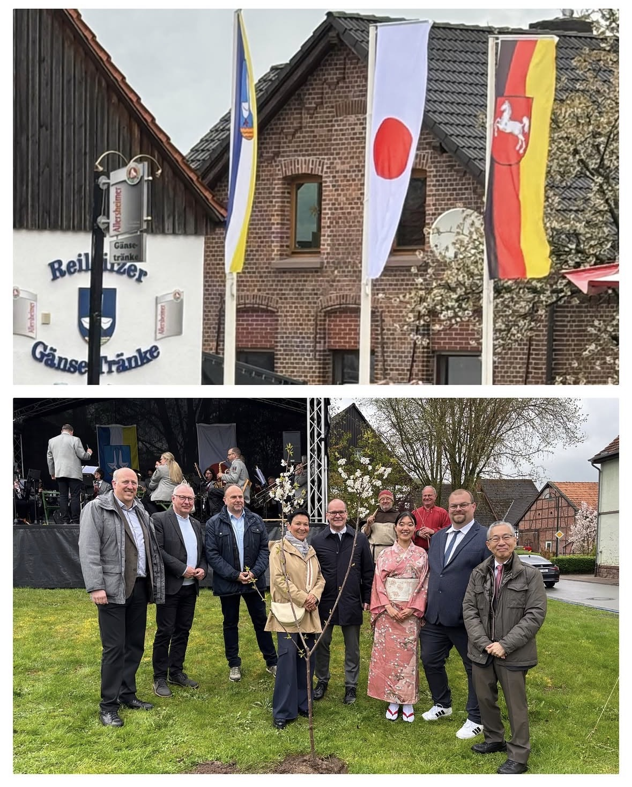
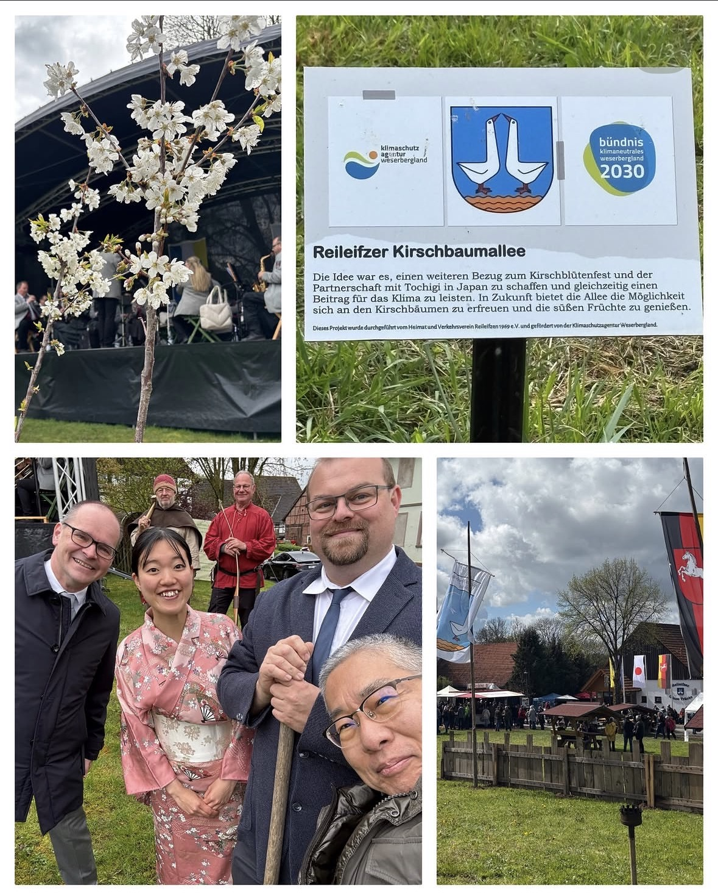
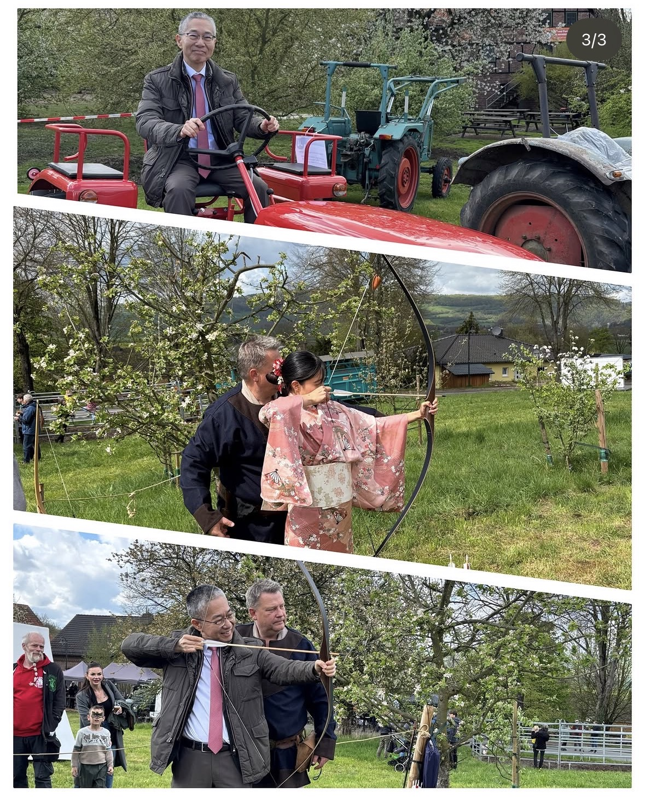
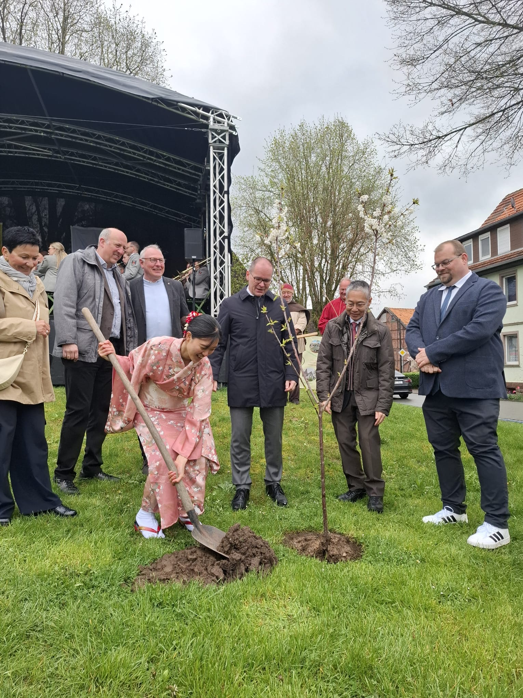
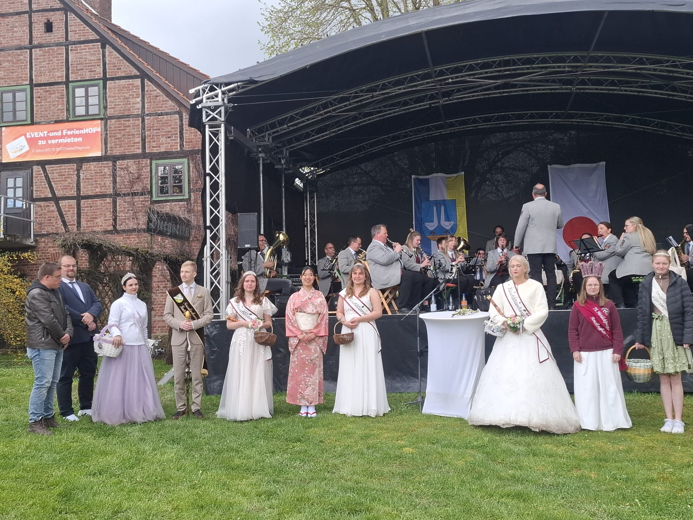
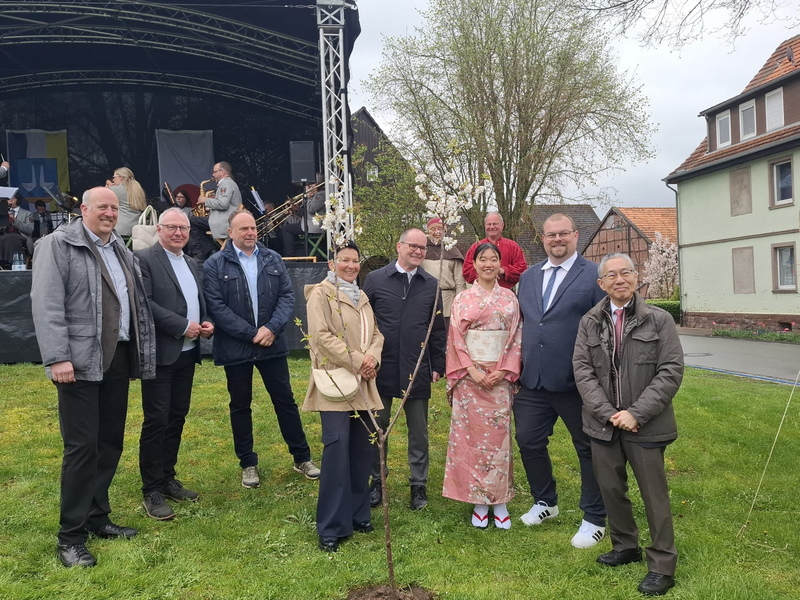
Frühjahrsputz in Reileifzen: Arbeitseinsatz des Verkehrsvereins
Teile der Infrastruktur fit für die Saison gemacht – 14 Helfer packen kräftig an
Am Mittwoch, den 1. April, trafen sich insgesamt 14 engagierte Helfer des Verkehrsvereins zu einem umfassenden Arbeitseinsatz, um das Dorf für die kommende Saison vorzubereiten. Trotz des Datums war dies kein Aprilscherz: Es wurde ordentlich angepackt! Ein Teil war der Wiederaufbau der Brücke an der Wellnessoase, die ab sofort wieder sicher überquert werden kann. Zudem wurde die Beschilderung an der Weser für die Kanuten wieder aufgestellt.
Auch für Sport und Entspannung wurde was getan. Die Pfosten des Volleyballfeldes wurden stabil neu einbetoniert und das Badmintonfeld steht wieder für spannende Matches bereit. Sobald der Beton ausgehärtet ist wir auch hier das Netz wieder gespannt. Wer es lieber ruhig angeht, kann sich über die frisch aufgestellten Liegen und Ruhebänke sowie zwei der überdachten Schutzhütten freuen. Nach der getanen Arbeit ließen es sich die Helfer nicht nehmen, der Einladung des ersten Vorsitzenden zu folgen. In der gut geheizten Werkstatt klang der Tag bei einer zünftigen Brotzeit mit Mettbrötchen und kühlen Getränken – inklusive dem ein oder anderen Feierabendbier – gesellig aus.
In eigener Sache: Engagement für unser Dorf
Wir freuen uns über jeden, der sich einbringt. Es ist genau dieses Engagement der Bewohner von Reileifzen, das uns von der breiten Masse abhebt. Scheut euch nicht, Initiative zu ergreifen oder zu einem Arbeitseinsatz zu kommen – jeder ist willkommen!
Fragen oder Anregungen? Schreib uns:
verkehrsverein@reileifzen.de
Ansprechpartner: 1. Vorsitzender Thorben Grühn & 2. Vorsitzender Tobias Hoffmeister